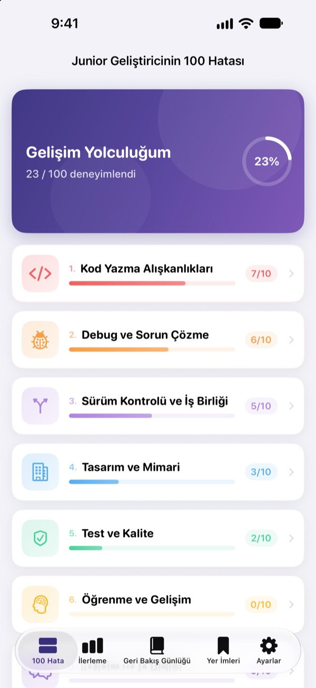
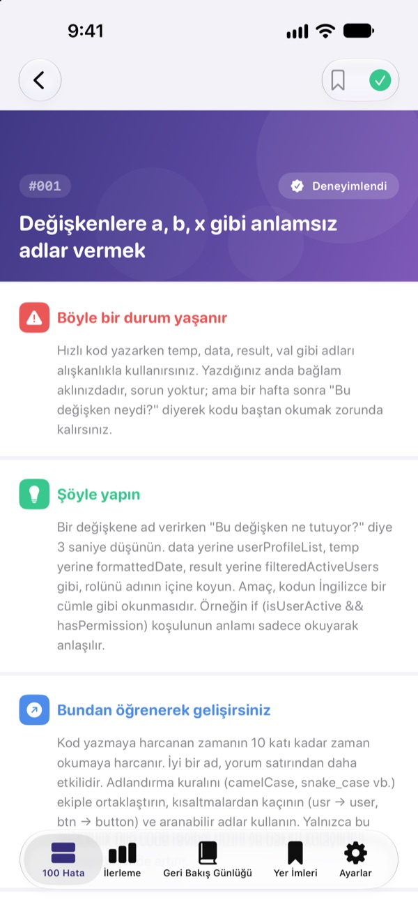
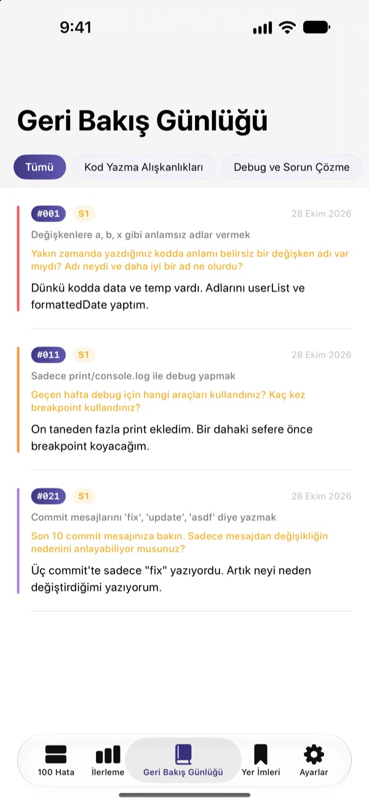
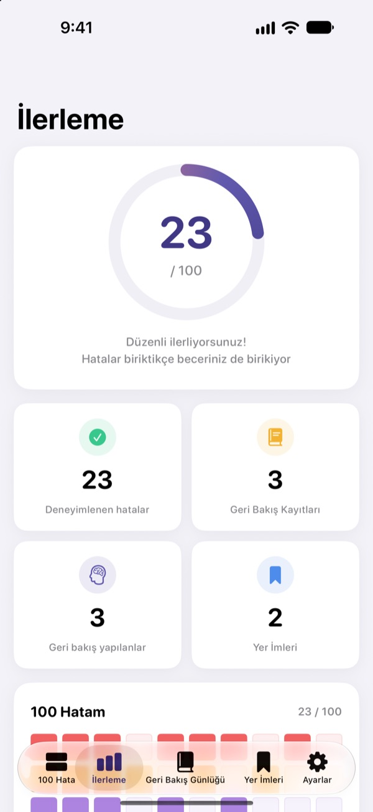

Hataları canın
yanmadan öğren
Yeni başlayan geliştiricilerin en sık yaptığı 100 hata tek bir yerde. Her birinde ne olduğunu, ne yapman gerektiğini ve ne öğrendiğini okur, ardından bir geri bakış sorusunu yanıtlarsın; böylece aynı hatayı iki kez yapmazsın.
İlk 30 hata ücretsiz. iPhone, iPad ve Mac'te çalışır.

Bir hatayı aç
Bunlar ücretsiz açık olan ilk kategorideki 10 hata, uygulamadakiyle kelimesi kelimesine aynı. Daha önce yaşadıklarını Deneyimlendi olarak işaretle.
Kod incelemesinde yine aynı yorum mu?
Anlaşılmaz değişken adları, 200 satırlık fonksiyonlar, kopyala yapıştır kod. Her senior bunlardan geçti, ama insan genelde kendisi düşünce fark ediyor. 100 Hata bu hataları sana önceden gösterir ve kendi işini düşündürür, böylece onları tekrarlamazsın.
Ne olur, ne yapılır, ne öğrenilir
Her hata üç bölümde anlatılır: ne olduğu, ne yapman gerektiği ve ondan ne öğreneceğin.
Kod yazma alışkanlıklarından güvenlik ve performansa kadar on kategori; yalnızca gerçek ekiplerde tekrar tekrar yaşanan hatalar.

Akılda kalsın diye geri bakış soruları
Her hatanın 4 geri bakış sorusu var, toplam 400. Kendi projelerini düşünerek yanıtla, okuduğun şey deneyime dönüşsün.
Yanıtların kategoriye göre Geri Bakış Günlüğü'nde toplanır, istediğin zaman yeniden okuyabilirsin.

Ne kadar ilerlediğini tek bakışta gör
Yaşadığın hataları işaretle, ilerlemen kategori bazında ve toplamda büyüsün. Yeniden bakmak istediklerine yer imi ekle.
Her şey iCloud ile iPhone, iPad ve Mac arasında eşzamanlanır.

Üç adımda başla
- 1
Bir kategori seç
Kod yazma alışkanlıkları, debug ve sürüm kontrolü ücretsiz açık.
- 2
Oku ve işaretle
Kendin yaptığın hatalarda Deneyimlendi'ye dokun.
- 3
Geri bak
Kısa da olsa bir yanıt yaz. Geri Bakış Günlüğü'ne eklenir.
10 kategori
- Kod Yazma Alışkanlıkları
- #001–#010 · Ücretsiz
- Debug ve Sorun Çözme
- #011–#020 · Ücretsiz
- Sürüm Kontrolü ve İş Birliği
- #021–#030 · Ücretsiz
- Tasarım ve Mimari
- #031–#040 · PRO
- Test ve Kalite
- #041–#050 · PRO
- Öğrenme ve Gelişim
- #051–#060 · PRO
- İletişim ve İş Birliği
- #061–#070 · PRO
- Deploy ve Operasyon
- #071–#080 · PRO
- Güvenlik ve Veri
- #081–#090 · PRO
- Performans ve Optimizasyon
- #091–#100 · PRO
Her kategoride 10 hata, her hatada 4 geri bakış sorusu var.
30'u ücretsiz. 100'ünün hepsi PRO ile.
Ücretsiz
- İlk 3 kategori, 30 hata
- Bunlara ait 120 geri bakış sorusu
- Kontrol listesi, Geri Bakış Günlüğü, ilerleme ve yer imleri
- iCloud eşzamanlama (iPhone, iPad, Mac)
100 Hata PRO
- Kalan 7 kategori, 70 hata daha (#031–#100)
- 280 geri bakış sorusu daha
- Gelecekteki tüm içerik güncellemeleri
Aylık, yıllık (aylığa göre %50'ye varan indirim) ya da tek seferlik ömür boyu satın alma.
Kişisel veri toplanmaz, analiz aracı ve reklam yoktur.
Sık sorulan sorular
Neler ücretsiz?
Kod Yazma Alışkanlıkları, Debug ve Sorun Çözme ile Sürüm Kontrolü ve İş Birliği kategorilerindeki 30 hatanın tamamı ve soruları. Kontrol listesi, Geri Bakış Günlüğü, ilerleme, yer imleri ve iCloud eşzamanlama da ücretsiz.
PRO'yu başka bir cihazda nasıl kullanırım?
Aynı Apple Kimliği ile giriş yap ve abonelik ekranında Satın Alımları Geri Yükle'ye dokun.
Aboneliği nasıl iptal ederim?
İstediğin zaman Ayarlar › Apple Kimliği › Abonelikler'den. Mevcut dönemin bitiminden en az 24 saat önce iptal edilmezse abonelik otomatik olarak yenilenir. Ömür boyu satın alma tek seferlik ödenir.
Verilerim cihazlar arasında eşzamanlanmıyor.
Tüm cihazların aynı Apple Kimliği ile iCloud'a giriş yaptığını ve Ayarlar'da bu uygulama için iCloud'un açık olduğunu kontrol et. Eşzamanlama için ağ bağlantısı da gerekir.
Her şeyi nasıl silerim?
Uygulamanın ayarlarında Tüm Verileri Sıfırla'ya dokun. İşaretler, yanıtlar ve yer imleri silinir; bu işlem geri alınamaz.
Hangi cihazlarda çalışır?
iPhone, iPad ve Mac. PRO, aynı Apple Kimliği'ni kullanan tüm cihazlarda açılır.
Verilerim bir yere gönderiliyor mu?
Hayır. İşaretlerin ve yanıtların yalnızca kendi cihazlarında ve kendi iCloud'unda saklanır. Uygulama kişisel veri toplamaz, analiz aracı ve reklam içermez.
Soru ya da önerin mi var? leeo@kakao.com adresine yaz.